Functionality¶
With version 1.2, CARTA provides the following widgets/dialogues for image view or analysis:
- file browser dialogue: to view image header and to load an image
- image viewer: to view raster images
- render configuration widget: to configure how a raster image is rendered
- animator widget: to navigate through different images, different channels, and different Stokes
- region list widget: to view and configure region properties
- spatial profiler: to view x and y spatial profiles at the cursor position
- spectral profiler: to view spectral profile from a region of interest
- histogram widget: to view histogram from a region of interest
- statistics widget: to view basic statistics from a region of interest
- Stokes analysis widget: to view basic polarization quantities
- log widget: to view program logs.
In addition, the server version of version 1.2 supports server authentication via the “Lightweight Directory Access Protocol” (LDAP). When using the server version, users can log in with their user name and password identical to the server hosting their images (either local or network storage). To share access of a given folder to collaborators, users can just change the permission via the “chmod” command.
The support of the HDF5 image (IDIA schema) is further enhanced in verson 1.2. Rotated dataset and pre-calculated quantities, such as statistics or histograms, are properly utilized to enhance performance and user experience.
Server-side status¶
As CARTA is fundamentally a client-server application, it would be good to know the status of the server side at the client side. This is also useful for the desktop version to know if the application runs normally or not. The server status is displayed as a circular icon at the top-right corner of the main window. The connection latency can be seen by hovering over the icon. There are three kinds of status:
- Green: this means that the server side is initially connected successfully.
- Orange: this means that the initial connection to the server side was broken (e.g., unstable internet) but has been reconnected. Please note that CARTA may behave abnormally in this case.
- Red: this means that the server side is not accessible. CARTA is not functional in this case.
Note
If CARTA behaves abnormally or stops responding, please check the server-side status icon and connection latency. If it becomes orange, the internet connection might have been interrupted. If it becomes red, the internet connection is lost, or the backend process has been terminated. It is highly recommended to reload CARTA if you see orange or red icon. If the situation reoccurs, please contact us through the CARTA Helpdesk (carta_helpdesk@asiaa.sinica.edu.tw).
File browser¶
File browser, accessible via the menu File -> Open image or the menu File -> Append image, provides information of images supported by CARTA. Currently CARTA supports images in:
- CASA format
- HDF5 format (IDIA schema)
- FITS format
- MIRIAD format
Only the images matched these formats will be shown in the file list with image type and file size. When an image is selected, a brief summary of image properties is provided on the right side of the dialogue. Full header is also available in the second tab. To view an image, click the Load button at the bottom-right corner. To view a new image with all the loaded images closed, use File -> Open image -> Load. To view multiple images, use File -> Append image -> Append.
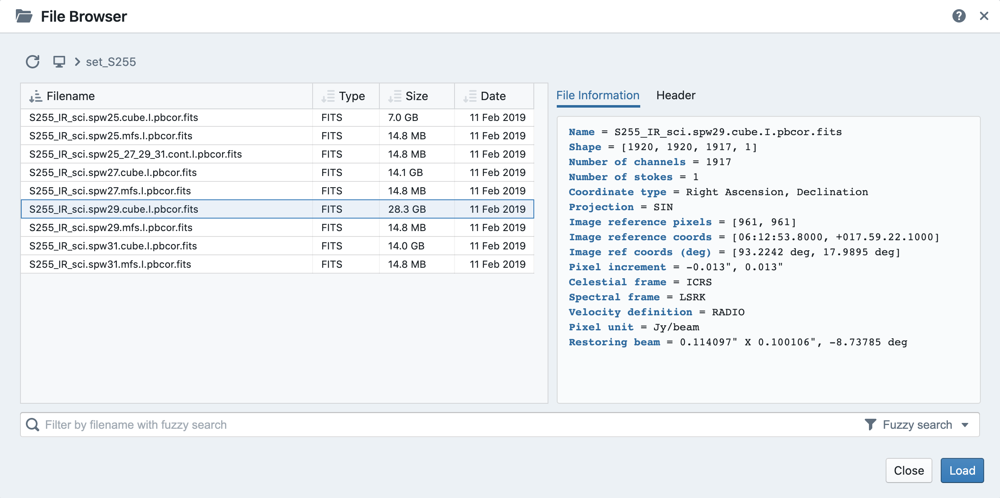File browser remembers the last path where an image was opened within one CARTA session and the path is displayed (breadcrumbs) at the top of the dialogue. Therefore, when the file browser is re-opened to load other images, a file list will be displayed at the last path where the previous image was opened. Users can use the breadcrumbs to navigate to parent directories.
For the CARTA-server application, the server administrator can limit the global directory access through the “root” keyword argument when launching the CARTA backend service.
exec carta_backend port=6002 base=/scratch/images/Orion root=/scratch/images
In the above example, users will see a list of images at “/scratch/images/Orion” when accessing the file browser dialogue for the first time in a new session. Users can navigate to any other folders inside “/scratch/images/Orion”. Users can also navigate one level up to “/scratch/images”, but not beyond that (neither “/scratch” nor “/”).
Note
When viewing images in appending mode, alignments in the world coordinate system (WCS) and the frequency/velocity space are not available in this version. This feature is expected in v1.3.
Note
Position-velocity (PV) images are not currently supported yet.
Note
The ability to close a loaded image will be addressed in v1.3.
Warning
When the file information of an image cube with a per-plane-beam is requested, CARTA will spend a significant amount of time to calculate the beam information. This also applies when opening images with a per-plane-beam. This is a known issue and the development team will try to solve it in future releases.
Tip
When using remote mode, an image may be opened directly using a modified URL. For example, if we wanted to open a remote image file “/home/acdc/CARTA/Images/jet.fits”, we would append
&folder=/home/acdc/CARTA/Images&file=jet.fits
to the end of the URL (e.g., http://www.carta.edu:2000/?socketUrl=ws://www.carta.edu:3000). In this example our full URL is
http://www.carta.edu:2000/?socketUrl=ws://www.carta.edu:3000&folder=/home/acdc/CARTA/Images&file=jet.fits
Please note that it is necessary to give full path. Tilde (~) is not allowed.
HDF5 (IDIA schema) image support¶
Except the CASA image format, the FITS format, and the MIRIAD format, CARTA also support images in the HDF5 format under the IDIA schema. The IDIA schema is designed to ensure that efficient image visualization is retained even with extraordinary large image cubes (hundreds GB to a few TB). The HDF5 image file contains extra data to skip or to speed up expensive computations, such as per-cube histogram or spectral profile, etc. A brief outline of the content of an HDF5 image is provided below:
- XYZW dataset (spatial-spatial-spectral-Stokes): similar to the FITS format
- ZYXW dataset: rotated dataset
- per-frame statistics: basic statistics of the XY plane
- per-cube statistics: basic statistics of the XYZ cube
- per-frame histogram: histogram of the pixel values of the XY plane
- per-cube histogram: histogram of the XYZ cube
Additional tiled image data, which will speed up the process of loading very large images significantly, will be added to the HDF5 image file in the near future.
Image viewer¶
When an image is loaded via the file browser, it is shown in the image viewer with its per-frame histogram shown in the render configuration widget. Currently CARTA supports raster image only.
Note
Contour rendering will be available in v1.3.
Warning
If you are running a VNC session from a headless server, CARTA may fail to render images properly (they may appear as a solid color). This is due to the fact that CARTA renders images using WebGL which uses GPU acceleration. Most headless servers have neither discrete nor dedicated GPUs. In such cases, it is recommended to use the “remote” mode of CARTA (see Command line startup for instructions).
The aspect ratio of the image view is determined by the panel geometry. When the image viewer panel is resized, a tip with a ratio in screen pixel will be displayed (c.f., Resizing a panel ).
Tiled rendering¶
CARTA utilizes an efficient approach, “tiled rendering”, to display a raster image. What users see in the image viewer is an ensemble of tiles (default 256 pixel by 256 pixel) processed in parallel. As an example shown in the figure below, if we have an image with 2048 pixels by 2048 pixels, tiles will be constructed in four layers with differnt downsample factors. The zero-th layer contains only one tile with a size of 256 pixels by 256 pixels. A downsample factor of 8 is applied to the original image to create this tile. The first layer contains four tiles with each a size of 256 pixels by 256 pixels. The downsample factor of 4 is applied to the original image to create these four tiles. This process continues until no downsampling is required. In this case, the tiles of the third layer are not downsampled. As users change the field of view, or the size of the image viewer, tile data of the right layer will be used. For example, if a user is interested in the field of the blue box and the image viewer has a screen size of 512 pixels by 384 pixels, tiles of the layer 2 will be used for rendering. In this case, nine tiles will be used. If the user pans a little bit around the blue box, no new tile data are required. If the user pans the view to the green box with the same viewer size, only the additional two tiles of layer 2 are required and four tiles will be re-used for rendering. With this tiled rendering approach, tiles will be re-used for different zoom levels and different field of views to minimize the amount of data transfer while keeping the image sharp on screen. Effectively, users will see that the image becomes sharper and sharper at higher and higher zoom levels.
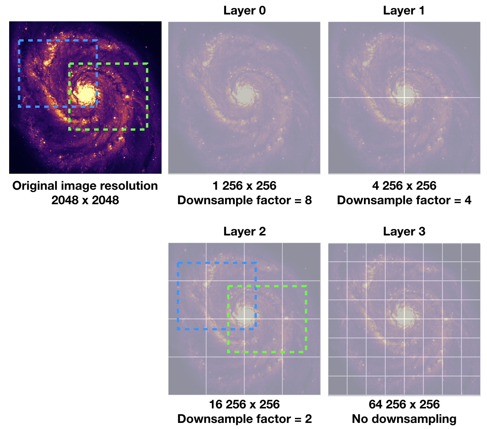The performace of tiled rendering can be customized with the preferences dialogue, File -> Preferences -> Performance. The default values are chosen to assure raster images are displayed efficiently with sufficient accuracy. Advanced users may refine the setup if necessary. For example, when using the server version under poor internet condition, compression quality might be lowered down a bit to make the tile data smaller. Note that a smaller compression quality might introduce noticible artifacts on the raster image. Please adjust with caution.
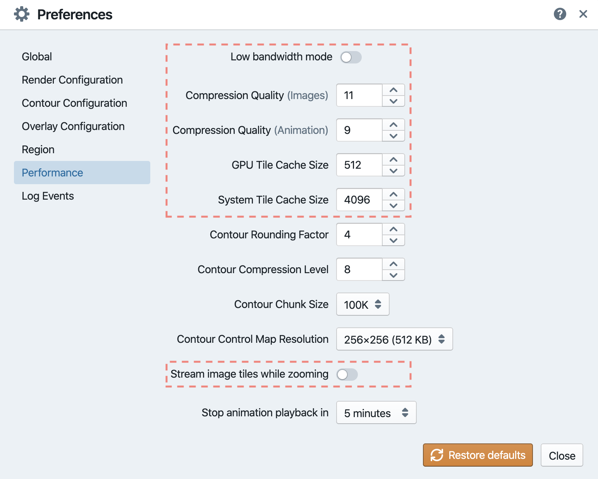Warning
To make remote visualization of large images possible and efficient, CARTA adopts the above mentioned tiled rendering approach together with an efficient image compression algorithm. At rare circumstance, artifacts may be seen on the images. A known issue is viewing an image with all pixels as zeros but one with a very high value. At low or default zoom level, some artifacts will be observed around that pixel. At higher zoom levels, the artifacts may disappear. CARTA has been tuned to localize the artifacts within few screen pixels in order to minimize the impact of scientific analysis on such special cases. The compression quality is adjustable via the preferences dialogue, File -> Preferences -> Performance. Advanced users may need to chose a higher compression quality for those special cases with caution. Should this become a problem in any kinds of analysis of yours, please contact carta_helpdesk for help.
CARTA image loading performance¶
The per-frame rendering approach helps to improve the performance of loading an image significantly. Traditionally when an image is loaded, the minimum and maximum of the entire image (cube) are computed first before image rendering. This becomes a serious performance issue if the image (cube) size is extraordinary large (> several GB). In addition, applying the global minimum and maximum to render a raster image usually (if not often) results in a poorly rendered image if the dynamical range is high. Then users need to re-render the image repeatedly with refined boundary values. Re-rendering such a large image repeatedly further deduces user experiences.
CARTA hopes to improve the image viewing experience by adopting GPU accelerated rendering with web browser technology. In addition, CARTA only renders an image with just enough image resolution (tiles and down-sampling). This combination results in a scalable and high-performance remote image viewer. The total file size is no longer a bottleneck. The determinative factors are: 1) image size in x and y dimensions, 2) internet bandwidth, and 3) storage I/O, instead. For a laptop with 8 GB of RAM, the largest image it can load without swapping is about 40000 pixels by 40000 pixels (assuming most of the RAM are free before loading image).
The approximated RAM usage of loading images with various spatial sizes is summarized below.
| Image size (x, y) [pixel] | RAM usage |
|---|---|
| 512 | 1 MB |
| 1024 | 4 MB |
| 2048 | 16 MB |
| 4096 | 64 MB |
| 8192 | 256 MB |
| 16384 | 1 GB |
| 32768 | 4 GB |
| 65536 | 16 GB |
Render configuration of a raster image¶
The render configuration widget controls how a raster image is rendered in the image viewer. On the top, there is a row of buttons with different clip levels plus a custom button. Below there is a plot showing the per-channel histogram (logarithmic scale) with a bin count equals to the geometric mean of the image size (x and y). The two vertical red bars indicate the two clip values of a colormap. Interaction with a chart, such as the histogram, is demonstrated in the section Mouse interactions with charts. On the right, there is a column of options, such as histogram type, scaling function, color map, clip values, and control parameter of a scaling function (if applicable). Extra options to configure the histogram plot are hidden in the tool box on the right border. The histogram can be exported as a png image or a text file in tsv format.
By default, CARTA calculates per-channel histogram. When per-cube histogram is requested, a warning message and a progress dialogue will show up. Calculating a per-cube histogram can be time-consuming for large image cubes. Users may cancel the request at any time by pressing the cancel button in the progress dialogue. If the image is in the HDF5 format (IDIA schema), the pre-calculated per-cube histogram will be loaded directly and displayed mostly instantly.
By default, CARTA determines the boundary values of a colormap on per-channel basis. That is, a default “99.9%” clip level is applied to the per-channel histogram to look for the two clip values. Then apply the values in “linear” scale to the default colormap “inferno” to render a raster image. This helps to inspect an image in detail without suffering from improper image rendering in most of cases. Below is an example of this per-channel rendering approach.
However, when comparing images channel by channel, color scales need to be fixed. This can be easily achieved by dragging the two vertical red bars, or typing in the values. When this happens, the “custom” button is enabled automatically and all frames will be rendered with the fixed boundary values. By clicking one of the clip buttons, CARTA switches back to the per-frame rendering mode if per-channel histogram is requested. Users may request the per-cube histogram to determine proper clip values. Below is an example of custom rendering with the per-cube histogram.
CARTA provides a set of scaling functions, such as:
- linear: \(y = x\)
- log: \(y = {\log}_{\alpha}({\alpha}x+1)\)
- square root: \(y = {\sqrt{x}}\)
- squared: \(y = x^2\)
- gamma: \(y = x^{\gamma}\)
- power: \(y = ({\alpha}x-1)/{\alpha}\)
A set of colormaps adopted from matplotlib is provided in CARTA.
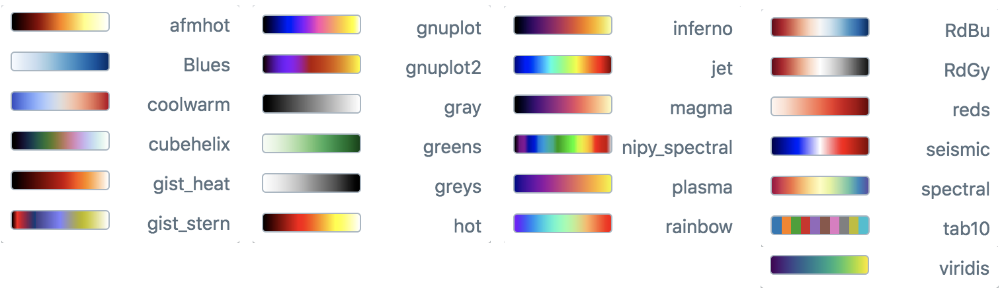The default scaling function, colormap, and percentile rank can be customized via the menu File -> Preferences -> Default render config.
Changing image view¶
CARTA provides different ways to change the image view. With a mouse, image zoom or pan actions are achieved by scrolling up/down or clicking, respectively, as demonstrated in the section Mouse interactions with images. Alternatively, the image can be changed to fit the image viewer, or to fit the screen resolution (i.e., screen resolution equals full image resolution), by using the buttons at the bottom-right corner of the image viewer. Zoom in and zoom out buttons are provided as well. To change to different frames, channels, or stokes, please refer to the section Animator.
When an image is zoomed in or out, the precision of the coordinate tick values is dynamically adjusted based on the zoom level. This feature allows users to analyze images with very different scales (WCS group; v1.3).
Cursor information¶
When the cursor is on the image viewer, pixel information at the cursor position is shown at the top side of the image. The information includes:
- World coordinate of the current coordinate system.
- Image coordinate in pixel.
- Pixel value.
- Frequency, velocity, and reference frame (if applicable).
When the coordinate system is changed (e.g., ICRS to Galactic), the displayed world coordinate will be changed accordingly. By default, they are displayed in decimal degrees for Galactic and Ecliptic systems, while for FK5, FK4, and ICRS systems, they are displayed in sexagesimal format. The precision of both formats is determined dynamically based on the image header and image zoom level.
The reference image coordinate (0,0) locates at the center of the bottom-left pixel of the image. Regardless the displayed image is down-sampled or not, the image coordinate always refers to full resolution image.
When cursor is moving, pixel value of the full resolution image is displayed. If image header provides sufficient information in the frequency/velocity domain, the frequency and velocity with the reference frame of the current channel will be shown.
To stop/resume cursor update, press “F” key. When the cursor stops updating, the cursor information bar, cursor spatial profiler, cursor spectral profiler will stop updating too.
Configuring an image plot¶
CARTA provides flexible options to configure the appearance of an image plot. The overlay settings are accessible via “View” -> “Overlay” -> “Customize”.
As an example, below is an image with default overlay settings.
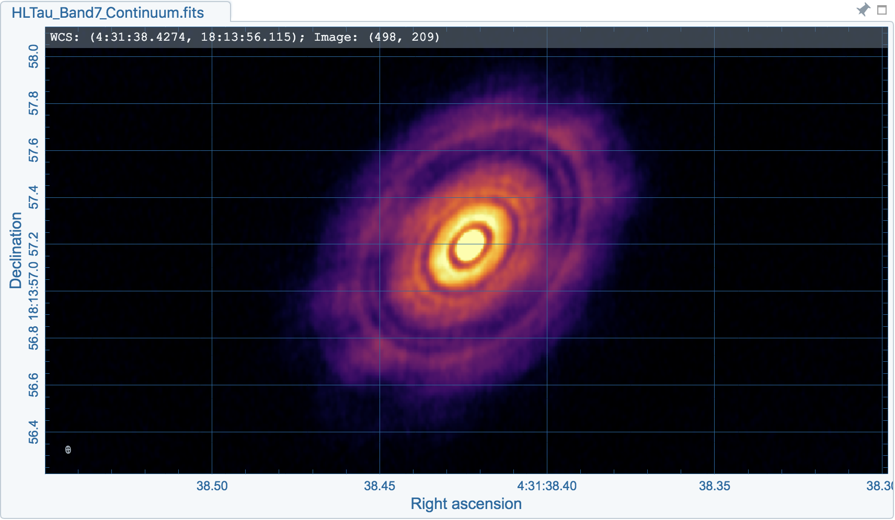And, this is a customized one. The coordinate system has been switched from FK5 to Galactic. Font type, size, and color are customized, as well as the axis border and grid lines.
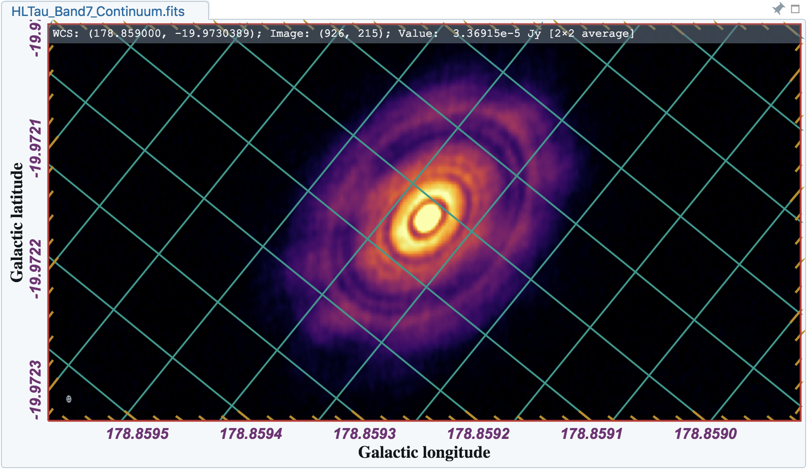The restoring beam is shown at the bottom-left corner, if applicable.
The image can be exported as a png image by clicking the “Export image” button at the bottom-right corner of the image viewer, or by “File” -> “Export image”.
Note
The ability to customize the appearance of a beam will be provided in future releases.
Note
Currently displaying beams of a cube with per-plane-beam is not supported.
Animator¶
The animator widget provides controls of image frames, channels, and stokes. When multiple images are loaded via File -> Append image, “Frame” slider will show up and allows users to switch between different loaded images. If an image file has multiple channels and/or stokes, “Channel” and/or “Stokes” slider will appear. The double slider right below the “Channel” slider allows users to specify a range of channels for animation playback. On the top there is a set of animation control buttons such play, next, etc. The action will be applied to the slider with the activated radio button. As an example below, the action will be applied to the channel axis of the second stokes axis of the third image file, and the animation range is from the second channel to the last channel.
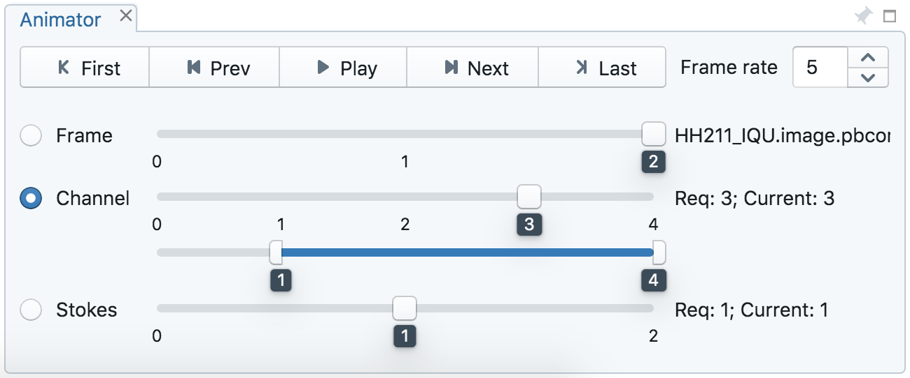The frame rate spin box controls the desired frame per second (fps). The actual frame rate depends on image size and internet condition.
Note
More animator features, such as playback modes (backward, bouncing), and playback step, etc. will be available in future releases.
Region of interest¶
As of v1.2, CARTA supports the following region types:
- rectangle (rotatable)
- ellipse (rotatable)
- square (rotatable; as a special case of rectangle; “shift” key + drag)
- circle (as a special case of ellipse; “shift” key + drag)
- point
- polygon
The creation and modification of regions are demonstrated in the section Mouse interactions with region of interest. To create a region, use the region button at the bottom-right corner of the image viewer, then use cursor to draw a region. CARTA allows regions to be created even if the region is outside the image. Keyboard shortcuts associated with regions are listed below.
| macOS | Linux | |
|---|---|---|
| Region properties | double-click | double-click |
| Delete selected region | del / backspace | del / backspace |
| Toggle region creation mode | C | C |
| Deselect region | esc | esc |
| Switch region creation mode | cmd + drag | ctrl + drag |
| Symmetric region creation | shift + drag | shift + drag |
| Pan image (inside region) | cmd + click / middle-click | ctrl + click / middle-click |
| Toggle current region lock | L | L |
| Unlock all regions | shift + L | shift + L |
Tip
“backspace” does not delete a region…
If using CARTA remote mode in Firefox on MacOS, you may find the “backspace” key navigates back a page instead of removing a region. This behaviour can be prevented by modifying your Firefox web browser settings:
- Enter about:config in the address bar.
- Click “I accept the risk!”
- A search bar appears at the top of a long list of preferences. Search for “browser.backspace_action”
- It will likely have a value of 0. Double click it, and then modify it to a value of “2”.
- Close the about:config tab and now backspace will no longer navigate back a page.
All created regions are listed in the region list widget with basic region properties. To select a region (region state changes to “selected”), simply click on the region in the image viewer, or click on the region in the region list widget. To modify the properties of a selected region, double-click on a region in the image viewer or a region in the region list widget. The color, line style, name, location, and shape, of a region are all configurable with the region property dialogue. To de-select a region, press “esc” key. To delete a selected region, press “delete” or “backspace” key. The activated region can be locked by pressing “L” key or by clicking the lock icon in the region list widget or region property dialogue. When a region is locked, it cannot be modified (resize, move, or delete) with mouse actions and the “delete” or “backspace” key. A locked region, however, can still be modified or delected via the region property dialogue. Locking a region could help the stituation when users want to modify overlapping regions, or could prevent modifying a region accidentally.
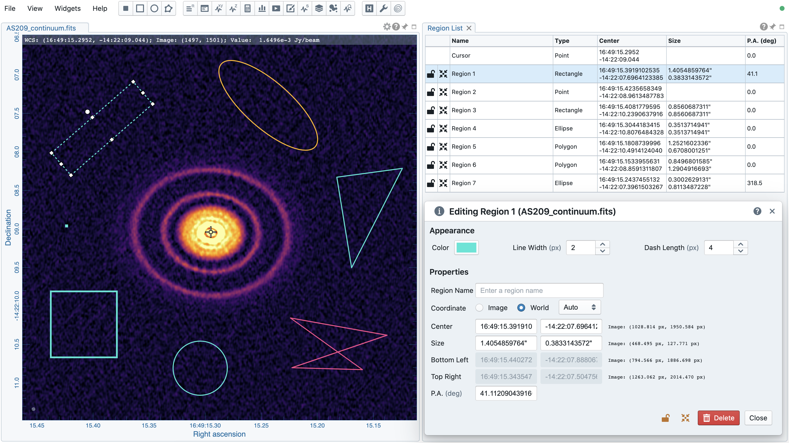CARTA checks if a polygon is simple or complex. If a polygon is detected as complex, its color will be in pink as a warning. Spectral profile, statistics, or histogram of a complex polygon can still be requested. However, the outcome may be beyond users’ expectation. The enclosed pixels depend on how a complex polygon is constructed. Please use complex polygon with caution.
Region of interest enables practical image cube analysis through statistics, histogram, and spectral profiler widgets. When a region is selected, the region associated widgets will be highlighted with a persistent blue box as demonstrated below.
Tip
Single mouse click may trigger image pan or region selection. If it is intended to pan to a position inside a region, hold “command” or “ctrl” key then click, or use middle-click if available.
As of v1.2, CARTA supports basic region import and export capability. Regions, in world coordinate or in image coordinate, can be exported to a text file or imported from a text file. To import a region file, use the menu File -> Import regions.
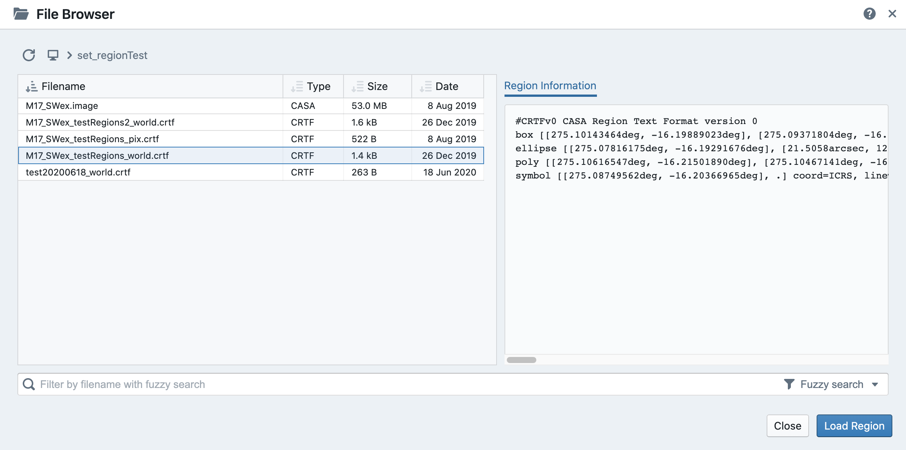To export regions to a region file, use the meun File -> Export regions. All regions, except cursor, will be exported.
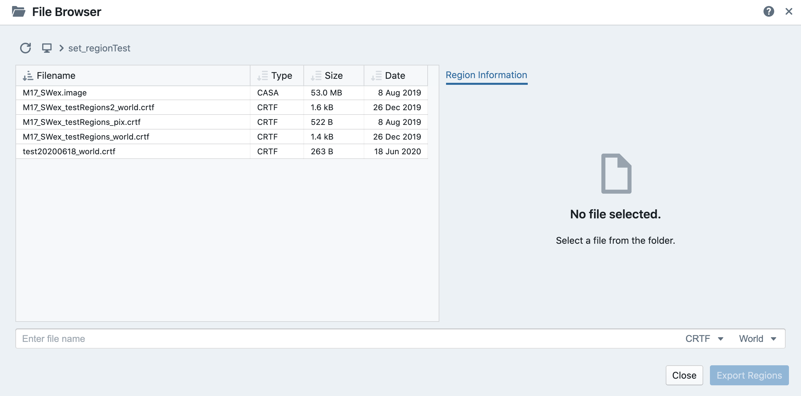As of v1.2, CASA region text format (.crtf) is supported with some limitations. Currently only the 2D region defination is supported. Other properties, such as spectral range, reference frame, or decoration (line style, line width, etc.) will be supported in future releases. DS9 region format will be supported in the future releases too.
The currently supported CRTF region syntax is summerized below:
- Rectangle
- box[[x1, y1], [x2, y2]]
- centerbox[[x, y], [x_width, y_width]]
- rotbox[[x, y], [x_width, y_width], rotang]
- Ellipse
- circle[[x, y], r]
- ellipse[[x, y], [bmaj, bmin], pa]
- Polygon
- poly[[x1, y1], [x2, y2], [x3, y3], …]
- Point
- symbol[[x, y], .]
Please refer to https://casa.nrao.edu/casadocs/casa-5.6.0/imaging/image-analysis/region-file-format for more detailed descriptions about the CRTF syntax.
Note
Full support of the CRTF and DS9 region formats will be available in future releases.
Spatial profiler¶
Spatial profiler provides the spatial profiles of the current image at the cursor position. When the cursor is moving on the image, profiles derived from the full resolution raster image are displayed. The “F” key will disable or enable profile update. When cursor update is disabled, a marker “+” will be placed on the image to indicate the position of the profiles taken.
When displaying a spatial profile with the number of pixels more than the number of screen pixels of the spatial profiler widget, a decimated profile will be derived and displayed to users as an enhancement of performance. Min/max decimation of a profile is adopted to ensure profile features are preserved. In other words, positive and negative peaks should stay at the same screen pixels just like displaying the full resolution profile. When users keep zooming in the profile, decimation with narrower and narrower interval is applied dynamically. Full resolution profile is displayed when the number of screen pixels is more than the number of pixels of the profile to be displayed.
The interactions of the spatial profiler widget are demonstrated in the section Mouse interactions with charts. The red vertical bar indicates the pixel where the profile is taken. The bottom axis shows the image coordinate, while optional world coordinate is displayed on the top axis. Extra options to configure the profile plot are available to the right border. The option “Show Mean/RMS” will adopt the data in the current view to derive a mean value and an rms value, and visualize the results on the plot. Numerical values are also displayed at the bottom-left corner. The profile can be exported as a png image or a text file in tsv format via the buttons at the bottom-right corner.
When the cursor is on the image in the image viewer, the pointed pixel value (pixel index and pixel value) will be displayed at the bottom-left corner of the spatial profiler. When the cursor is on the spatial profiler graph, the pointed profile data will be displayed instead.
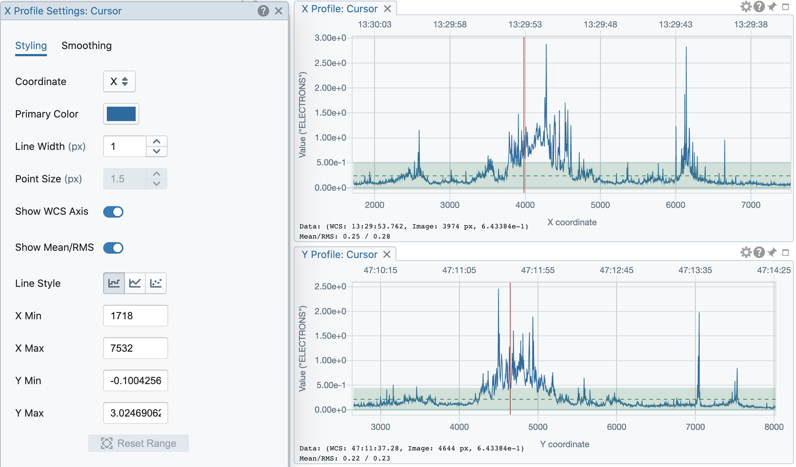Note
More flexibilities on how mean and rms values are derived will be provided in future releases. Profile fitting capability will be available in future releases.
Spectral profiler¶
Spectral profiler provides the spectral profile of the current image cube at the selected region. The default region is set to “Cursor”. The “F” key will disable or enable cursor profile update. When cursor update is disabled, a marker “+” will be placed on the image to indicate the position of the profile taken.
When requesting a spectral profile, a common disappointing user experience is that users may have to wait for an unknown amount of time to see the final result if the image cube is large. As an improvement on this aspect, CARTA supports partial update of spectral profile. Partial profiles will be periodically delivered to users while the full profile calculations are still ongoing.
When the property of a region (cursor or a regular region) is modified while the profile of the original region is being updated, the partial profile will disappear and a new partial profile cooresponding to the new region will start updating. If users modify the request of a spectral profile via the spectral profile widget before it is fully delivered, the original profile calculations will be cancelled and new profile calculations will start. In short, now CARTA should just focus on calculating and showing the profiles that users pay attention to. If a profile is no longer needed to be shown on the screen, the profile calculation will be cancelled immediately, instead of blocking and queueing up new profile requests.
When displaying a spectral profile with the number of channels more than the number of screen pixels of the spectral profiler widget, a decimated profile will be derived and displayed to users as an enhancement of performance. Min/max decimation of a profile is adopted to ensure profile features are preserved. In other words, positive and negative peaks should stay at the same screen pixels just like displaying the full resolution profile. When users keep zooming in the profile, decimation with narrower and narrower interval is applied dynamically. Full resolution profile is displayed when the number of screen pixels is more than the number of pixels of the profile to be displayed.
When regions are created, the spectral profiler widget can be configured to display a profile from a specific region with the “region” dropdown menu. Additional statistic types to compute the region spectral profile are available with the “statistic” dropdown menu (default to mean). If the image cube has multiple Stokes, the “Stokes” dropdown menu will be activated and defaulted to “current” which is synchronized with the selection in the animator. To view a specific Stokes, select with the “Stokes” dropdown menu.
Multiple spectral profile widgets can be configured to display different region spectral profiles. The widget with the selected region will be highlighted with a persistent blue box.
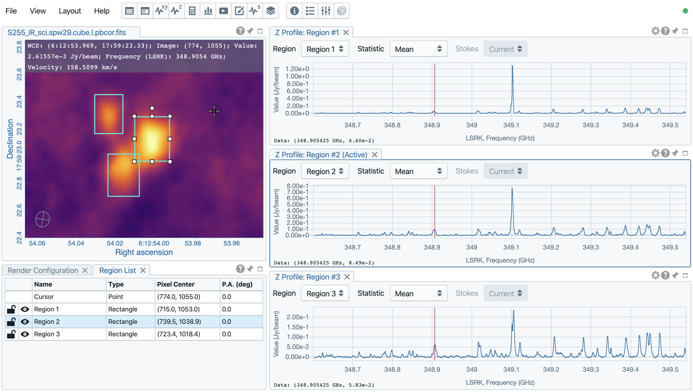The interactions of the spectral profiler widget are demonstrated in the section Mouse interactions with charts. The red vertical bar indicates the channel of the image displayed in the image viewer. Clicking directly on the spectral profiler graph will change the displayed image to the clicked channel. Alternatively, the red vertical bar is draggable and acts just like the animator slider.
The bottom axis shows the spectral coordinate, while optional channel coordinate can be displayed instead. Extra options to configure the profile plot are available to the right border. The option “Show Mean/RMS” will adopt the data in the current view to derive a mean value and an rms value, and visualize the results on the plot. Numerical values are also displayed at the bottom-left corner. When the cursor is on the image in the image viewer, the pointed pixel value (frequency or velocity or channel index, and pixel value) will be displayed at the bottom-left corner of the spectral profiler. When the cursor is on the spectral profiler graph, the pointed profile data will be displayed instead. The profile can be exported as a png image or a text file in tsv format via the buttons at the bottom-right corner.
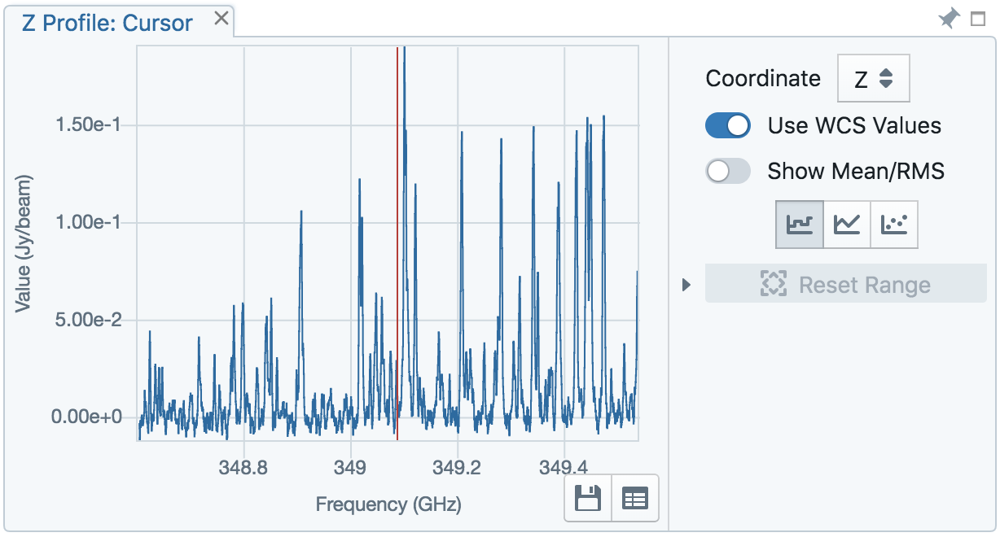Note
More flexibilities on how mean and rms values are derived will be provided in future releases. Enhancement of the spectral profile widget will be available in future releases.
Stokes analysis widget¶
Stokes analysis widget allows users to view basic polarization quantities of a multi-channel (number of channel > 1), multi-Stokes (IQU or IQUV) cube efficiently. The widget includes the following plots:
- Stokes Q intensity and Stokes U intensity over the spectral axis
- Linearly polarized intensity over the spectral axis
- Linear polarization angle over the spectral axis
- Stokes Q intensity versus Stokes U intensity
The profiles can be zoomed and panned with mouse similar to the spatial profile widget or the spectral profile widget (Mouse interactions with charts). The Stokes Q versus Stokes U scatter plot is color-encoded from red to blue with increasing frequencies. The profiles can be requested at the cursor position (single pixel) or over a region of interest. Fractional polarization quantities are also supported. Examples are given in the following figures. The first one is from real ALMA data, while the second one is from an artifical Stokes cube.
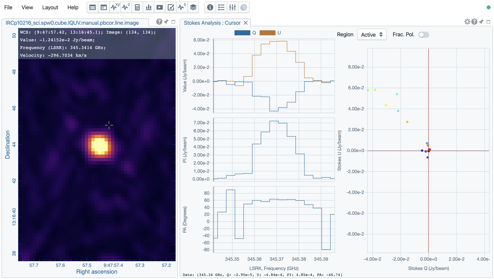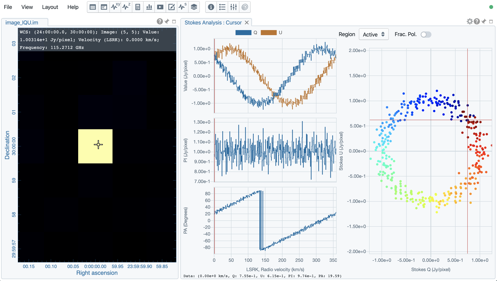Statistics widget¶
Statistics widget allows users to see statistics with respect to a selected region. The “Region” dropdown menu can be used to select which region statistics to be displayed. The default is “Image” which means the entire image of the displayed channel is adopted to compute statistics. Multiple statistics widgets can be created to display statistics of different regions as demonstrated below. The widget with the selected region will be highlighted with a persistent blue box.
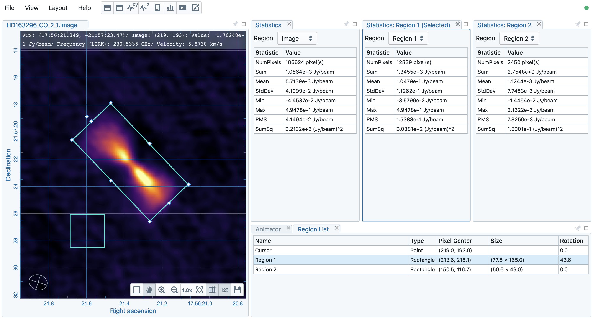Note
Flux density (Jy) will be supported in a patch release before v1.3.
Histogram widget¶
Histogram widget allows users to visualize data in a histogram with respect to a selected region. The “Region” dropdown menu can be used to select which region histogram to be displayed. The default is “Image” which means the entire image of the displayed channel is adopted to construct a histogram. Multiple histogram widgets can be created to display histograms of different regions as demonstrated below. The widget with the selected region will be highlighted with a persistent blue box.
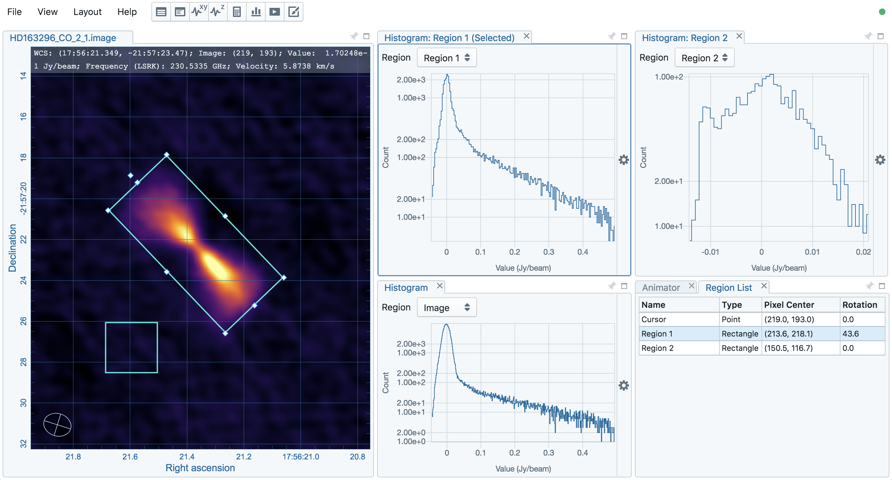Note
With v1.2, histogram bin width and bin count are automatically decided. Enhancement of the histogram widget, including histogram fitting, will be available in future releases.